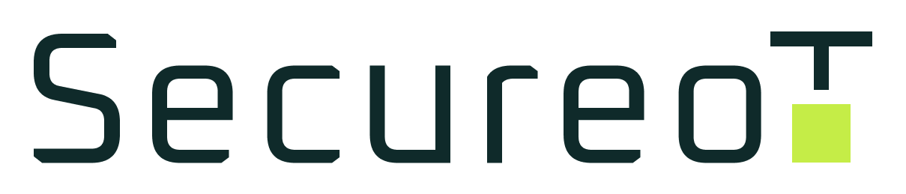
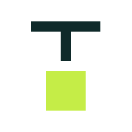

EDEN NISUYEVE | WORK PROCESS
My work process for the SecureoT website,
step by step.
Getting to know the field
I like to start by looking at companies doing similar work, to understand the industry and the kind of content it calls for.
I asked ChatGPT and Claude for relevant cybersecurity companies, then went through their homepages.
Moodboard (and lots of open tabs)
I gathered references for the logo, the colors and a graphic element that makes the brand unique, from Pinterest and ChatGPT.
Choosing the Right Colors
Many cybersecurity brands lean on blue or neon purple. I wanted something different that still communicates technology and trust, without feeling too gaming-inspired.
Deep teal brings stability, signal green highlights key elements, and white keeps the design clean and balanced.
Inspired by Scanning
I explored different visual elements that could represent SecureoT and what the company does.
After reviewing several ideas, I liked the scanner concept the most. It represents the process of detecting potential risks.
From Idea to Logo
I chose Oxanium, a clean and professional font, for the logo.
I decided to use the final T in SecureoT and combine it with a small scanning element.
I wanted the logo to be clean and simple, with an element I could also use across the website.

IconSo what goes on the site?
I won't go through every prompt I used, but I wanted to make sure the homepage clearly explains what SecureoT does and why it matters.
It went something like this...
After a short back-and-forth, we landed on the content:
How do you keep people scrolling?
I went back to the sites from my research and explored a few more, this time focusing on motion.
I wanted the site to spark curiosity, so every scroll reveals something new.
Live Scanner
An interactive scanner brings the logo concept to life on the first screen.
Scroll reveals
Content enters gradually, so there's always something to discover.
Step by step
"How it works" advances with scrolling or swiping.
Responsive grid
In the contact section, the grid reacts to the cursor.
The fun part: building it
I used ChatGPT to help me write a detailed prompt for Claude Code, including my logo, colors, visual elements, and the interactions I wanted.
I also left room for creativity, while keeping the design professional, modern, and true to the cyber world, with a responsive layout for desktop and mobile.
A Few Versions Later...
Claude and I went through several rounds, refining the content, design and interactions each time until the result felt right.
I also generated the device images for the site with ChatGPT.
And What About Mobile?
Of course, the website had to look good and feel just as smooth on mobile, too.
So I tested and adjusted the mobile version along the way to make sure everything worked well.